Otros amigos del entorno del ex ministro reconocen que en su vuelta a la siderurgia ha influido un cierto desencanto con el final que ha tenido su carrera política , aunque él afirma que - el retiro de la política lo llevo bien -.
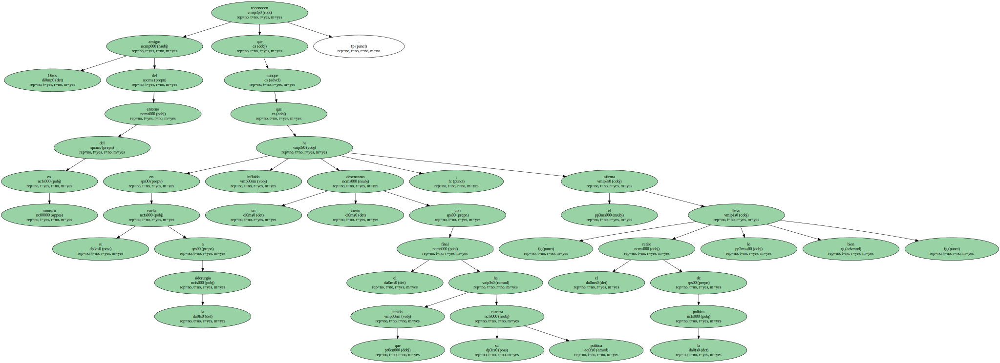Daniel Vega , ex gobernador civil de Vizcaya , comió con Corcuera hace unas semanas y fue su compañero en una partida de mus que perdieron , - seguramente - dice Vega - por mi culpa porque él juega muy bien , con mucho carácter , igual que en política -.
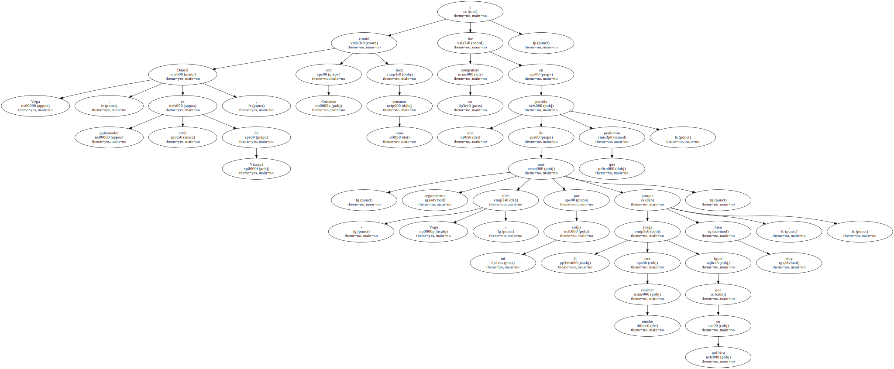La partida la saldaron pagando un décimo de lotería y las copas de la peña , pero el ex gobernador notó que el origen del cabreo de Corcuera era otro : - Le noté preocupado con la situación que se vive y cabreado.
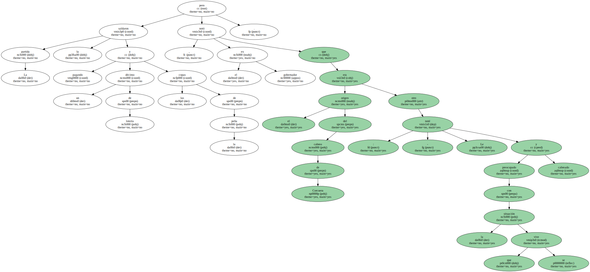Para mí él ha sido el mejor ministro de Interior que ha habido y es una pena que sus logros se vayan al traste por el sinvergüenza de Roldán.
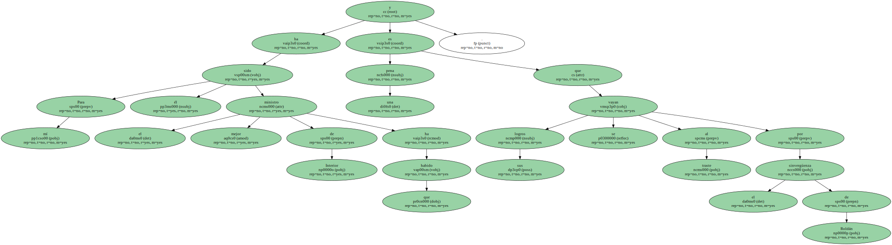' - Cómo no nos habremos dado cuenta ? ' , me dijo -.
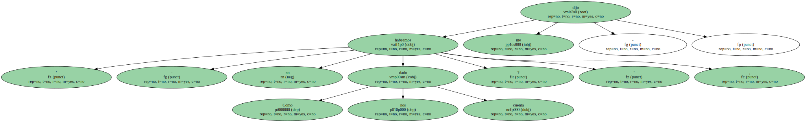La crisis política y las elecciones son , según los amigos de Corcuera , sus temas de conversación , mientras su situación personal no parece preocuparle mucho.
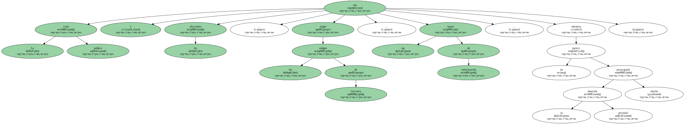Estos compañeros de envite le han visto - un poco deprimido - , pasando el síndrome de abstinencia del poder.
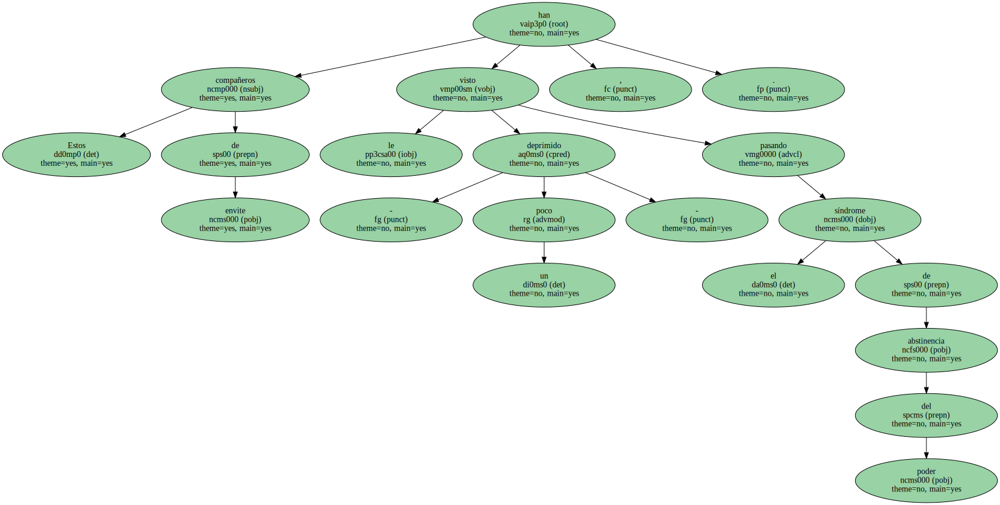A Corcuera sólo le queda su puesto como miembro del comité federal del PSOE.
Ofertas.
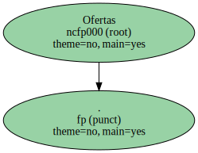En esa retirada ha habido algunas decepciones personales , pero también cartas inesperadas , como la que le envió Ramón Jáuregui , secretario general del PSE-PSOE , quien ya le ha hecho nuevas ofertas y que , - por supuesto - , en las próximas elecciones generales le ve como candidato por Vizcaya.

- Le he escrito - dice Jauregui porque es una forma que utilizo cuando me quiero poner íntimo.
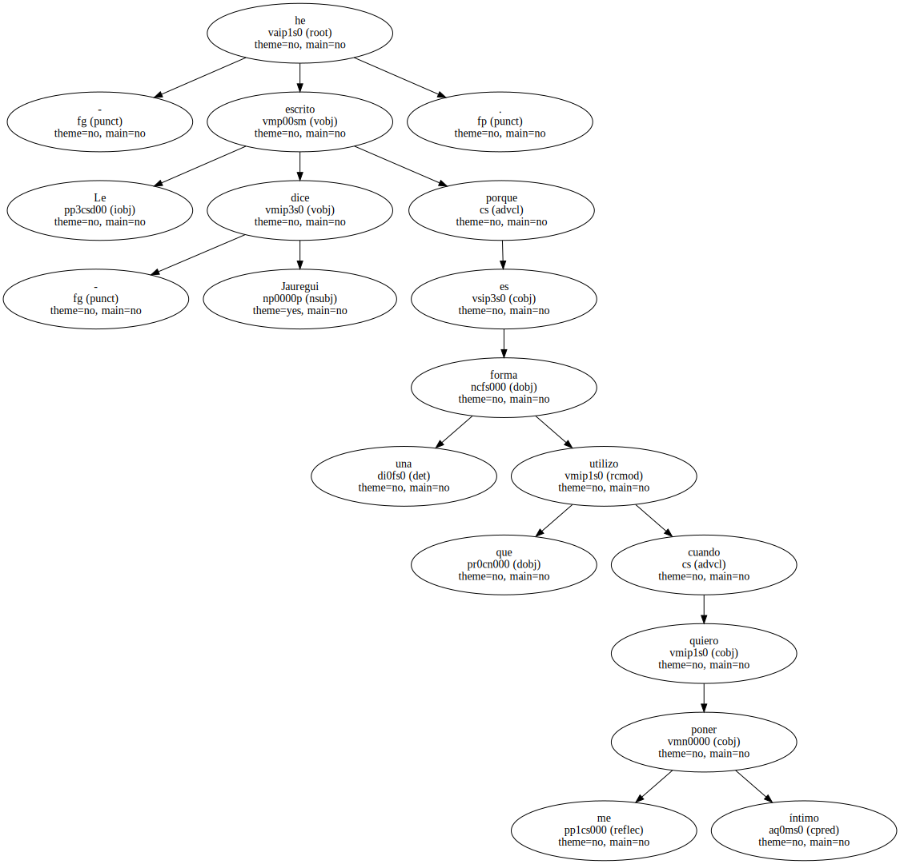Le decía que deseo que se reincorpore pronto a la vida política.
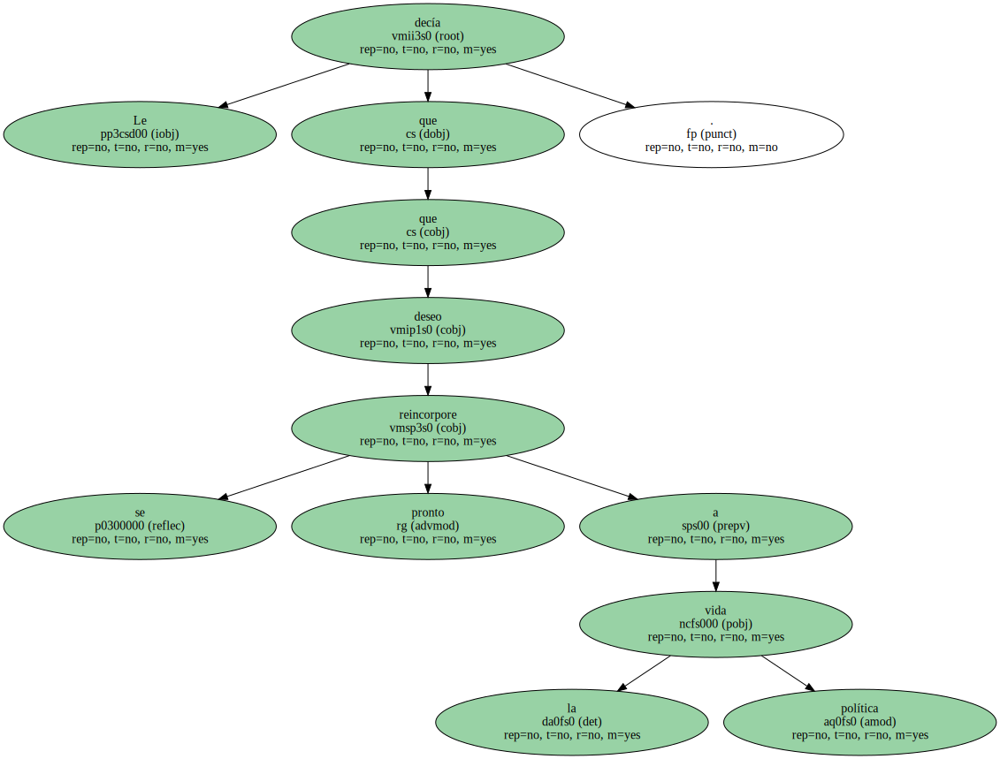Y al final le pedía que colabore conmigo en la campaña electoral vasca -.
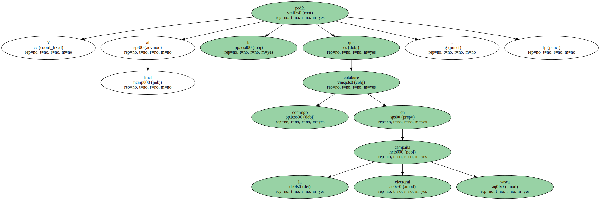Jáuregui entiende que Corcuera tiene motivos para estar deprimido : - A finales del 93 estaba en la cresta de la ola , muy feliz incluso por su dimisión.
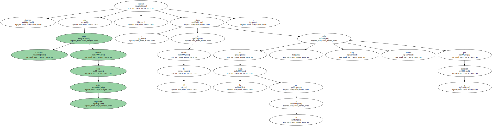Dejaba cinco años de gestión espléndida y se llevaba la sensación de que había superado pruebas para las que pensó que no estaba preparado por sus orígenes.
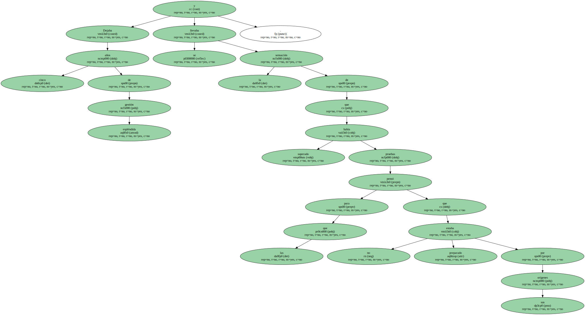Pero en pocos días se ha caído todo.
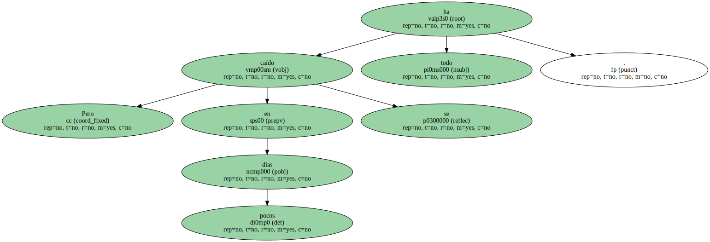